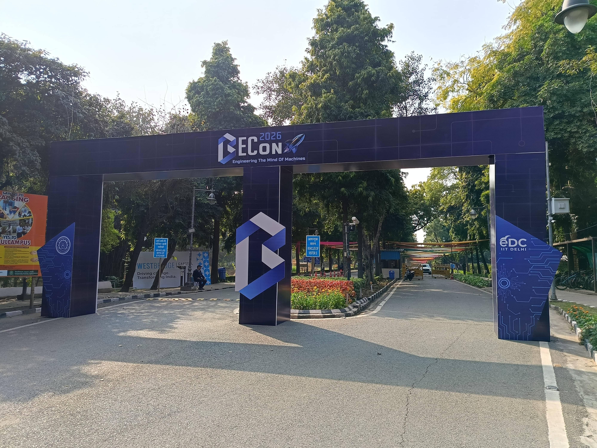
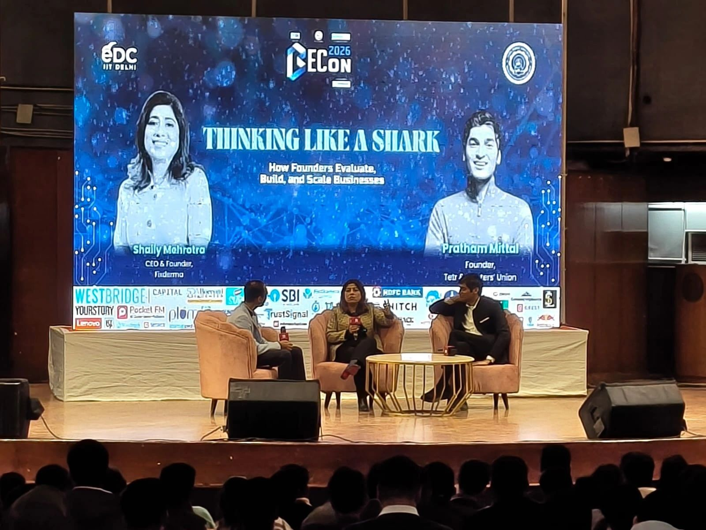
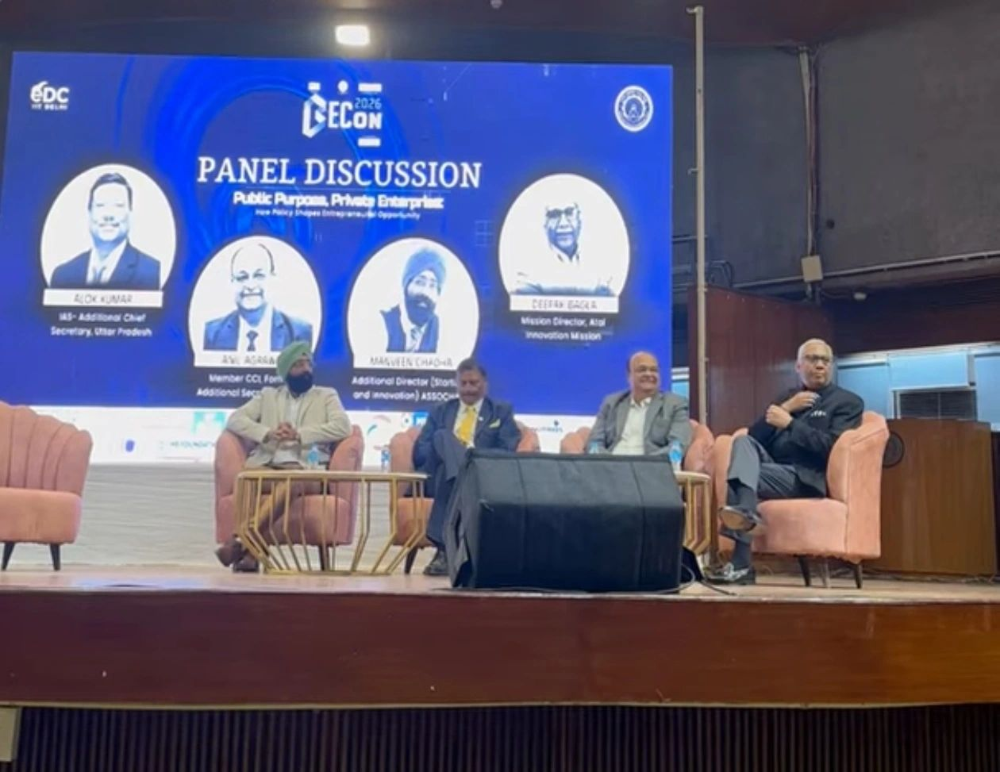
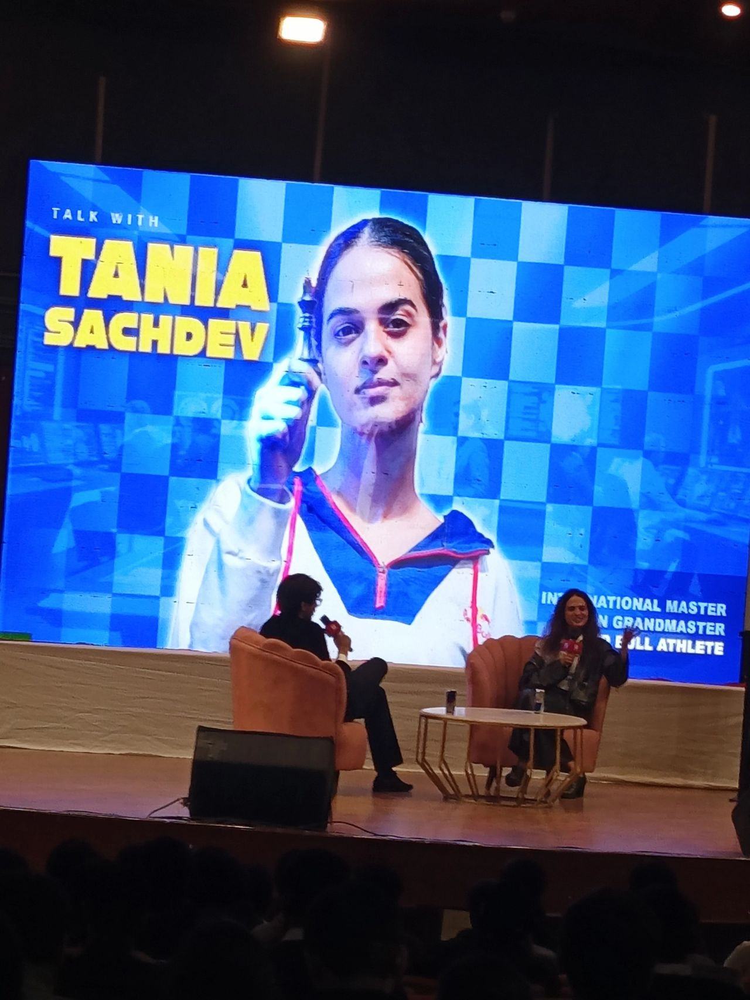

BeCon 2026 — Notes from a Weekend That Stayed With Me
A Weekend That Took Time to Sink In
Arriving at IIT Delhi

It has been a little over a week since I attended BeCon at the Indian Institute of Technology Delhi on 31 January and 1 February 2026, and I find that the experience has stayed with me longer than I expected.
When I first reached campus that Saturday morning, I was mostly curious. I had attended similar events before and expected the same thing: a crowd of people in blazers, the same buzzwords echoing off the walls (“disruption,” “scale,” “ecosystem”), and a vague sense of optimism that evaporates the moment you step outside. But as the day unfolded — walking between venues, overhearing conversations about products, research, funding, and technology — it became clear that this gathering had a different texture. This wasn’t just about startups; it felt like the starting blocks of a much bigger, more deliberate race of development.
The event, organized by the Entrepreneurship Development Cell IIT Delhi, felt less like a showcase and more like an ecosystem compressed into a weekend. It was a rare opportunity to see the intersection of academic research, entrepreneurial spirit, and real-world impact.
Kicked off with a inspiring speech by Shri Devesh Shrivastava, Special Commissioner of Delhi Police. His speech wasn’t a polite welcome; it was a briefing. He talked about hackathons they’d run, real problems they’d solved with entrepreneurs during COVID, and then laid out a list of what they still desperately need: tamper-proof IMEI tech, smarter traffic systems, AI for hotspot analysis, and more. He wasn’t just asking for innovation; he was giving a procurement list. It set the tone immediately: this was about building for the state, with the state. The most interesting problems, it turns out, aren’t always in the consumer app store.
After that, I dove into the Startup Clinic. This was the messy, brilliant heart of it all. Tables filled with prototypes, founders with that tired-but-focused look in their eyes. Yes, there were apps with modern solutions for delivery and wellness, but what stopped me were the ones wrestling with physics and chemistry.
I met a team building Iron-Air batteries—the kind of tech that could change the energy game if they get it right. Another was deep in quantum key distribution. There were smart textiles that could do more than just look good, and antimicrobial walls for hospitals. These weren’t just features; they were fundamental materials science. Chatting with the founders, the passion wasn’t for valuation, but for the problem itself. You could feel the difference.
Listening to Builders, Not Just Speakers

One of the most useful aspects of the weekend was hearing founders speak candidly about process rather than outcomes.
Sessions featuring Sanjeev Bikhchandani and Ankur Warikoo focused heavily on endurance — the idea that meaningful ventures rarely come from sudden breakthroughs, but from sustained effort over years. That idea resonated with me, especially since research follows a similar rhythm.
The panel with Shaily Mehrotra and Pratham Mittal emphasized something deceptively simple: clarity of the problem matters more than the elegance of the solution. Whether in startups or theoretical models, precision of framing often determines success.
It all wrapped up with the Grand Moonshot pitches. The most memorable was Aminuteman Technologies, working in a critical defense niche. Seeing them pitch was like watching the summit’s entire thesis come to life: an experienced hard-tech team, solving a real-world hard problem, with clear strategic importance.
Perspectives Beyond Startups

Some talks stood out because they widened the scope of discussion.
Ashneer Grover spoke with his usual directness about markets and decision-making under uncertainty. Nitin Vijay discussed how education must evolve to support innovation rather than merely certify it.
Air Chief Marshal RKS Bhadauria (Retd.) spoke with a clarity that was almost jarring. He talked about defense needs not as abstract “sectors,” but as specific, urgent gaps. When he mentioned brain drain as a national security risk, you could feel the vibe changing. This wasn’t theory; it was strategy. It made the deep-tech pitches in the clinic suddenly feel not just ambitious, but essential.
What Stayed With Me Afterwards

Looking back now, what stayed with me most was not any single talk, but the environment itself.
Being surrounded by people thinking seriously about building things — whether companies, research labs, or technological platforms — created a sense of momentum. Conversations moved easily between AI, semiconductors, deep-tech startups, and the future of India’s innovation landscape. It reminded me that progress rarely happens in isolation similar to how research works; it accelerates when ideas circulate among people willing to test them.
What I Took Away
I did not return with a startup idea or business plan. Instead, I returned with something more useful:
- A stronger appreciation for long-term execution
- A reminder that depth of understanding compounds over time
- And the realization that interdisciplinary work often produces the most interesting directions
For someone balancing theoretical research, AI systems, and quantitative modeling, the weekend quietly reinforced a principle which I personally follow: build foundations first, scale later.
BeCon did not give me any answers. But it sharpened several questions I am still thinking about — and for now, that feels like the more valuable outcome.